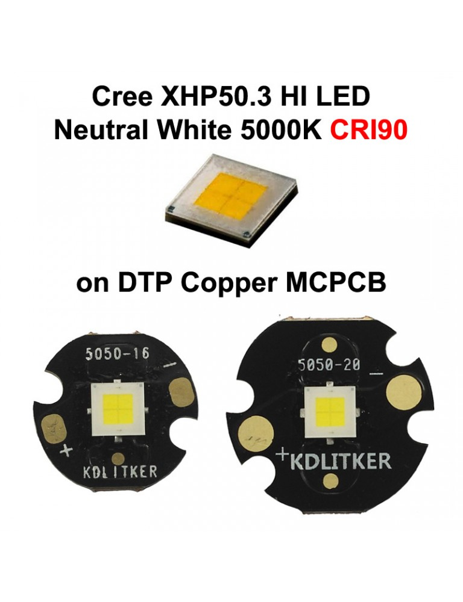
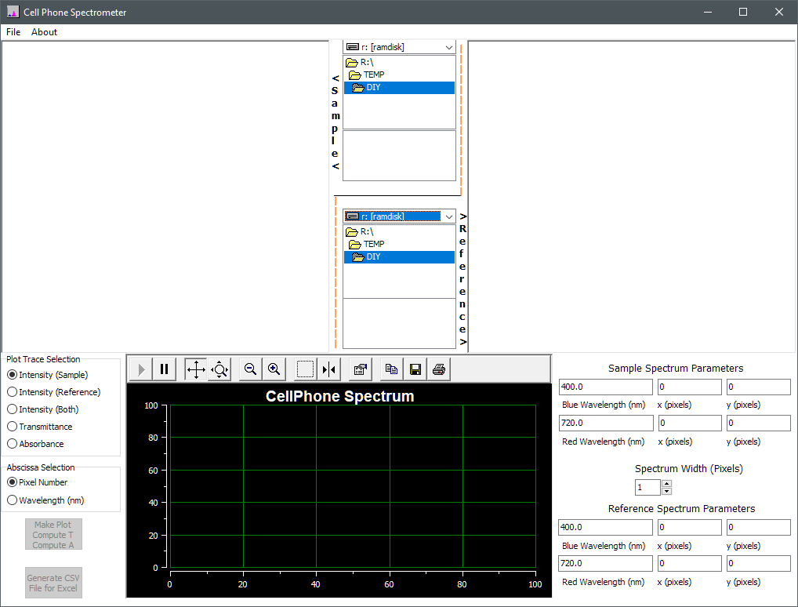

back

LED illumination

Nearly the same for nearly identical Optiphot 66 base, but Optiphot 1 (and Metaphot) are 12V 50W instead of 6V 20W.
6V
3x3mm active area 18W LED
Cree XLamp XHP50.3 datasheet - 46 pages

*27 July 2022*

LED spectra
- Using Thunder Optics' DIY Smartphone Spectrometer

Cell Phone Spectrophotometer
paper
software download
Google Drive

- GoSpectro Apps: iOS
Android
- video: Smartphone Spectrometer Lambda Calibration - SpectraUPB
- iPad Spectrometry
- KISScientific iPhone CamAtom
- iPhone SpectralViewer, spectraView
- High
resolution DIY spectrometer from captured diffraction spectra
- using
Tracker free Java video analysis and modeling tool
- Related Developments by Other People
- Public Laboratory's similar open source diffraction grating smartphone spectroscope
video
- online Spectral Workbench usage
video: with Public Laboratory's fold-up spectrometer
- Theremino Spectrometer
Sample Spectra